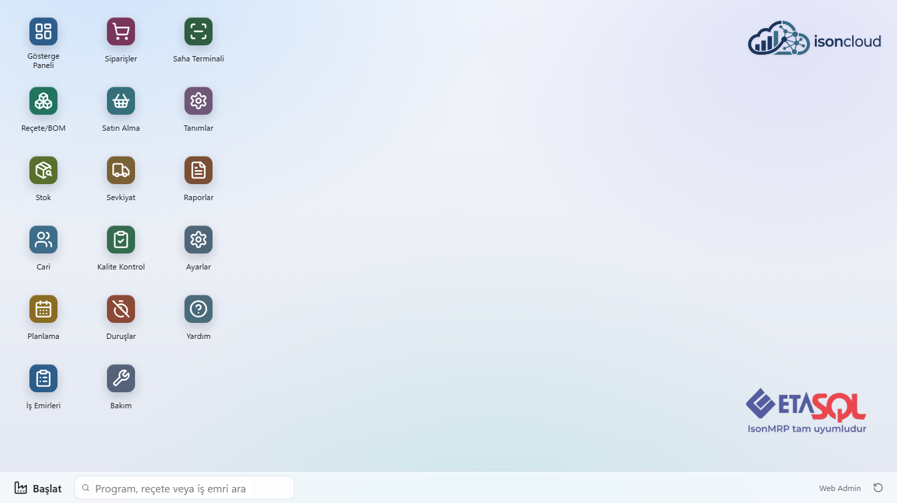
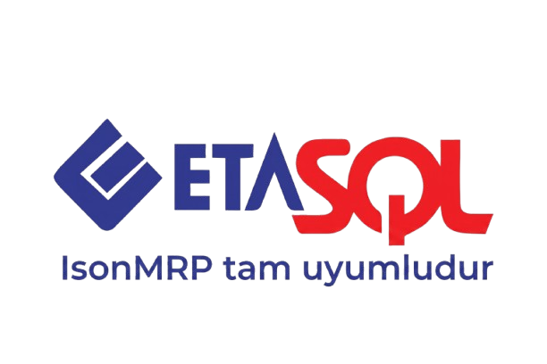
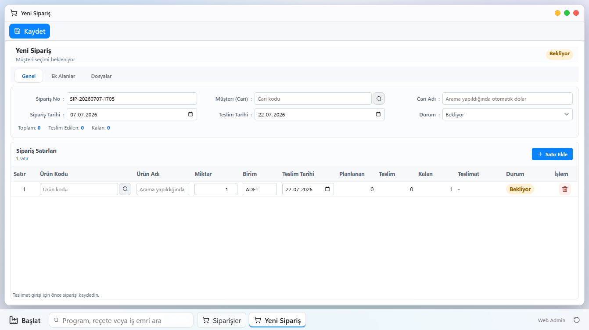
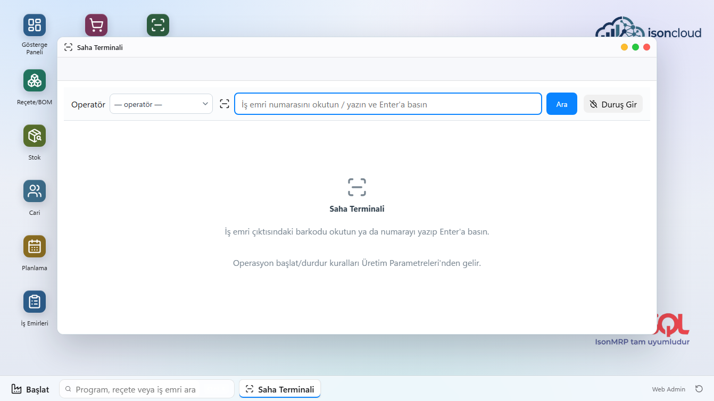
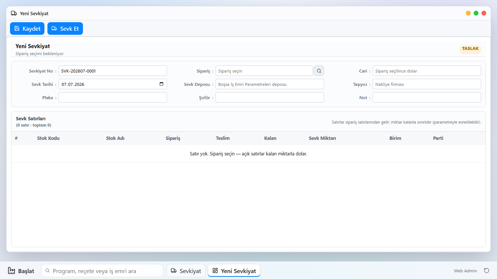

ETA SQL ile tam uyumlu · Web tabanlı
Üretiminizi tek ekrandan
planlayın, izleyin, yönetin.
ISON MRP; reçeteden iş emrine, satın almadan sevkiyata üretimin tüm adımlarını ETA SQL muhasebenizle gerçek zamanlı konuşan tek bir web uygulamasında toplar. Sunucunuza 5 dakikada kurulur, her bilgisayardan tarayıcıyla açılır.
- Sunucunuzda çalışır — verileriniz sizde kalır
- Kullanıcı başına ücret yok
- ETA irsaliye ve stok fişlerini kendisi keser


ISON MRP, ETA SQL ve ETA V8 veritabanlarıyla doğrudan çalışır: cari ve stok kartlarını ETA'dan okur, irsaliye ve stok fişlerini ETA'nın kendi kayıt düzeninde keser. Çift kayıt yok, aktarma dosyası yok.
Üretimin her adımı, tek pakette
Modüller ayrı ayrı satılmaz — hepsi standarttır. Yetki sistemiyle kim neyi görecek siz belirlersiniz.
Reçete / BOM
Çok seviyeli reçete, revizyon takibi, varyant ve fire yönetimi. Maliyet, reçeteden otomatik hesaplanır.
Planlama & GANT
Makine doluluk görünümü, sürükle-bırak çizelgeleme, vardiya takvimi ve kapasite uyarıları.
İş Emirleri
Otomatik numaralandırma, kısmi/fazla kapanış kuralları, gerçekleşen maliyet ve termin radarı.
Kaynak İhtiyaç (MRP)
Siparişten net ihtiyaca: eldeki stok, rezervasyon ve açık siparişleri düşerek tedarik önerisi üretir.
Satın Alma
İhtiyaçtan tek tıkla sipariş; mal kabulde ETA'ya otomatik giriş fişi; tedarik süresi takibi.
Stok Yönetimi
Transfer, sayım, rezervasyon ve parti/seri izlenebilirlik — ETA bakiyeleriyle mutabık.
Sevkiyat
Sipariş bağlantılı sevk belgesi; gerçek ETA satış irsaliyesini uygulama keser.
Kalite Kontrol
Mal kabul ve üretim muayeneleri, kriter katalogları, karantina ve şartlı kabul akışı.
Saha Terminali
Atölyede barkodla iş emri okut, tek dokunuşla başlat/durdur. Gerçekleşen işçilik otomatik toplanır.
Bakım & Duruş
Periyodik bakım planları, arıza işleri ve duruş nedenleri — kapasiteye otomatik yansır.
Raporlar & Panolar
Hazır raporlar + kendi SQL raporunuzu tasarlama, Excel'e aktarım, zamanlanmış e-posta, fabrika TV panosu.
Bildirim & E-posta
Termin yaklaşınca, sipariş kapanınca ya da rapor eşiği aşılınca uygulama içi zil + otomatik e-posta.
Tanıdık bir masaüstü, tarayıcınızda
Pencereler, kısayollar, başlat menüsü — ekibiniz ilk günden evinde hisseder. Görsele tıklayıp büyütebilirsiniz.



ETA'nızla çift yönlü, gerçek entegrasyon
Aktarma dosyası, gece senkronu, mükerrer kart derdi yok. ISON MRP, ETA SQL veritabanınıza doğrudan bağlanır:
- Okur: cari kartlar, stok kartlar, bakiyeler, fiyatlar, depolar
- Yazar: üretim giriş/çıkış fişleri, satış irsaliyeleri — ETA'nın kendi belge düzeninde
- Mutabakat: iç stok defteri ile ETA bakiyelerini tek ekranda karşılaştırır
Muhasebeciniz ETA'da çalışmaya aynen devam eder; üretim tarafı ISON MRP'de akar.
14 gün, tüm modüller, ücretsiz
Kurulumdan sonra tek tıkla deneme sürümünü başlatın — kredi kartı ve kayıt istemez. Süre sonunda verileriniz aynen korunur; lisans anahtarınızla kaldığınız yerden devam edersiniz.
Kurulum: 3 adım, ~5 dakika
İndirin & çalıştırın
Tek setup.exe. Türkçe kurulum sihirbazı sizi yönlendirir — ek program, framework ya da internet gerekmez.
ETA sunucunuzu gösterin
SQL Server adresinizi girin; uygulama veritabanını kendisi oluşturur ve Windows servisi olarak kurulur.
Tarayıcıdan açın
Deneme sürümünü başlatın, yönetici şifrenizi belirleyin — fabrikadaki her bilgisayardan aynı adresle bağlanın.
ISON MRP'yi indirin
Windows Server ya da Windows 10/11 (64-bit) yüklü, ETA SQL'in çalıştığı sunucuya kurun.
⬇ ISON-MRP-Setup.exe~41 MB · Windows 64-bit · Kurulum sihirbazı Türkçe
Sistem gereksinimleri
- Sunucu: Windows 10/11 ya da Windows Server (64-bit)
- Veritabanı: Microsoft SQL Server (ETA SQL'in kullandığı sunucu yeterlidir)
- ETA: ETA SQL / ETA V8 (entegrasyon için)
- İstemciler: Herhangi bir modern tarayıcı — kurulum gerekmez
Kurulum yardımı ve lisans için: info@ison.tr